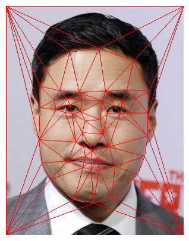

Owen Correspondences
Randall Correspondences

Owen Triangle Mesh

Randall Triangle Mesh
In this project I will be using triangle meshes, affine transformations, and inverse splatting to generate some cool face morphs.
To best morph two faces together, selecting facial correspondences is key. Using this online tool, I matched up the key features of my face with breakout Asian actor Randall Park's. I selected key features like the eyes, nose, mouth, etc. I then generate a triangular mesh connecting all these points using Delaunay triangulation to do so efficiently. Below are the visualizations of the triangulations.
Owen Correspondences
Randall Correspondences
Owen Triangle Mesh
Randall Triangle Mesh
After calculating the triangulation and applying it on the two images, we can now calculate an intermediate image between them. We start by calculating the midpoints of each correspondence between my face and Randall's face to get the "mid-way face"'s correspondences. Then for each triangle in my face, I calculate the affine transformation that would map all points in that triangle to the corresponding triangle in the mid-face. We then invert this transformation and use it to find the corresponding color a point should be from my face using an interpolation function. I repeat this for Randall and compute the color of each pixel of the mid-face as an equally weighted average of the two images. This is the result.
Me
Randall (the goat) Park
Randall Gozali
I wrote a code to generalize what I was doing in Part 2. It lets me specify the weight for the warp I need to do (so I don't need to always warp to the mid-way correspondences). And I also allow it to specify how much of the image's pixel values would come from the source or destination image. I used this to generate a face with a varying weight from 0 to 1.
Here is what the completed morph looks like in video form.
I downloaded the Danes face dataset to gain access to 40 different people's faces and respective correspondences. I calculated the mean correspondence and warped every face in that dataset to the mean. Then I calculated the mean of all those faces after warping them to get "The Average Dane" shown below, with some examples of faces warped to the mean.
Dane 1
Dane 2
Dane 3
Typicalized Dane 1
Typicalized Dane 2
Typicalized Dane 3
The Average Dane
I then warped myself to the mean correspondence to see what I would look like if I were Danish.
Me (0% Danish)
Me (50% Danish)
I then warped the Average Dane to my correspondence structure to what the typical Danish would look like if they were Indonesian.
Average Dane
Average Danish Indonesian
Something cool we can do is extrapolate from the vector linking the mean face to me and see what I would look like if I were even more of myself or even more of the mean. This was achieved by using extreme alpha values (less than zero or more than one) and here are the results.
Very Danish Me
Very Me Me
My girlfriend asked me this question the other day so I decided to test it out myself. I took a picture of her while we were facetime (with her consent of course) and found a picture of the average Chinese man on the internet. I then morphed their faces together to see what she would look like as a man. First I just morphed the correspondences so she had the bone structure of a man, then I did the same for just the difusion and then I did both.
My Girlfriend (Angela)
Average Chinese Man
My Girlfriend with Man Bones
My Girlfriend with Man Skin
Angelo Feng
lowkey...